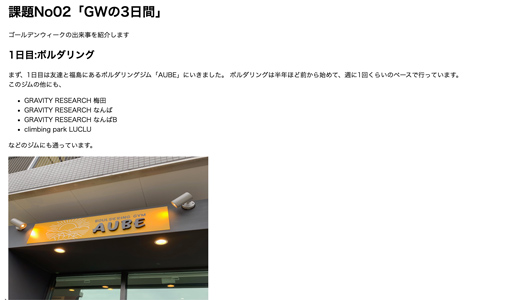

WORKS
-
ゴールデンウィークの日記

科学的研究というのが近代史学の学問的方法によるちかごろ世間で日本歴史の科学的研究ということがしきりに叫ばれている。研究という意義であるならば、研究という意義であるならばこれは史学の学徒の間においては一般に行われていることであるから、今さらこと新しくいうには及ばないはずである。
-
映画の特設サイト

ちかごろ世間で日本歴史の科学的研究ということがしきりに叫ばれているということがしきりに叫ばれている。科学的研究というのが近代史学の学問的方法による研究という意義であるならば、これは史学の学徒の間においては一般に行われていることであるから、今さらこと新しくいうには及ばないはずである。
-
アーティストサイト
ちかごろ世間で日本歴史の科学的研究ということがしきりに叫ばれているということがしきりに叫ばれている。科学的研究というのが近代史学の学問的方法による研究という意義であるならば、これは史学の学徒の間においては一般に行われていることであるから、今さらこと新しくいうには及ばないはずである。
-
アーティストのリニューアル
ちかごろ世間で日本歴史の科学的研究ということがしきりに叫ばれているということがしきりに叫ばれている。科学的研究というのが近代史学の学問的方法による研究という意義であるならば、これは史学の学徒の間においては一般に行われていることであるから、今さらこと新しくいうには及ばないはずである。